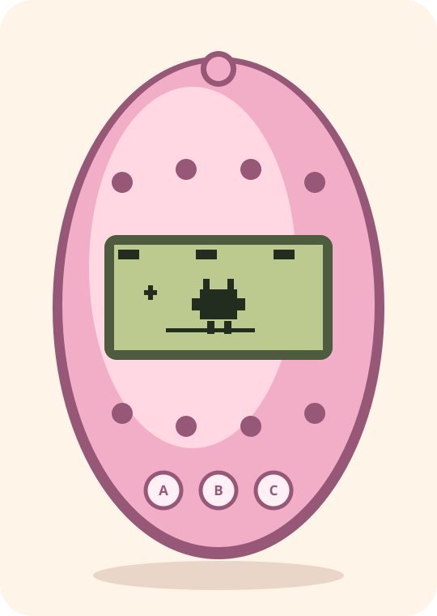

Další
Posune výběr mezi ikonami nebo mezi možnostmi v menu.
Klávesnice: A nebo →UŽIVATELSKÝ PRŮVODCE
Pečujte o původního digitálního mazlíčka pomocí tří tlačítek. Krmte ho, hrajte hry, ukliďte po něm a reagujte, když vás potřebuje.
Začít tutorial
CO OČEKÁVAT
Nové vejce se vylíhne přibližně po pěti minutách. Tvor roste z baby přes child a teen až do dospělé podoby. Jeho vývoj závisí na péči, ne na výběru hotového dospělého.
Hra ukládá změněný stav automaticky. Po dalším spuštění bezpečně započítá uplynulý čas.
TŘI TLAČÍTKA
Posune výběr mezi ikonami nebo mezi možnostmi v menu.
Klávesnice: A nebo →Otevře vybranou ikonu, provede péči nebo vyhodnotí hru.
Klávesnice: B, Enter nebo mezerníkZavře Food, Status nebo minihru bez provedení další akce.
Klávesnice: C, Backspace nebo EscapeMůžete také kliknout nebo klepnout přímo na levé, prostřední a pravé kulaté tlačítko pod LCD. Klávesa ← je pohodlná desktopová zkratka pro krok zpět.
PRVNÍCH PĚT MINUT

IKONY PÉČE
Doplňuje hlad nebo štěstí.
Po usnutí tvora jej vypněte.
Výhra zvýší štěstí a snižuje hmotnost.
Funguje pouze při nemoci.
Odstraní odpad z LCD i stavu tvora.
Věk/hmotnost, potřeby a disciplína.
Používejte jen při falešném attention call.
Automatický indikátor; není to ruční akce.

MINIHRY
Pipple line — Peek: A vybere levou nebo pravou pozici, B výběr vyhodnotí.
Budbit line — Number: LCD ukáže číslo. A přepíná tip „nižší/vyšší“, B jej vyhodnotí.
Jen výhra přidá štěstí a sníží hmotnost. Po výsledku stiskněte B nebo C pro návrat domů.
ŽIVOTNÍ CYKLUS
Prázdný hlad/štěstí, rozsvícené světlo během spánku nebo falešný call vyžadují reakci. U skutečné potřeby máte přibližně 15 minut.
Neuklizený odpad a příliš mnoho snacků mohou způsobit nemoc. Křížek na LCD znamená, že je čas na Medicine.
Pokud zdraví klesne na nulu, objeví se Farewell. LCD ukáže NEW; stisk B začne nové vejce s novou generační linií.
RYCHLÁ POMOC
Akce teď nemá účinek — například Medicine bez nemoci, Light když tvor nespí nebo Discipline bez falešného callu. Nezměněný stav se zbytečně neukládá.
Hra používá slot saves/slot-1.json relativně k místu, odkud ji spustíte. Vytváří také zálohu s příponou .bak.
Dospělého nevybíráte ručně. Péče určuje jeho podobu. Po Farewell založí B novou generaci; ta deterministicky vybere Pipple nebo Budbit line.